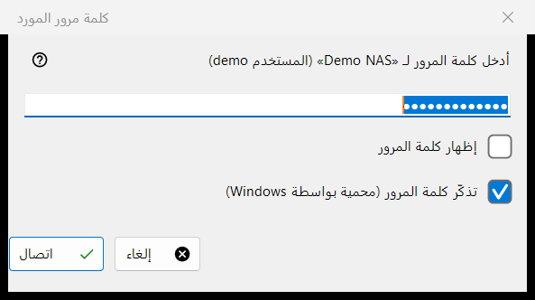
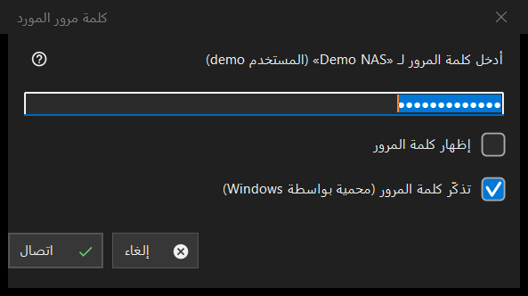

كلمة مرور المورد
الغرض من هذه النافذة
يطلب كلمة مرور خادم أو مجلد شبكة محفوظ. يُفتح عند فتح مورد لا تُحفظ كلمة مروره، أو عندما تُرفض المحفوظة، أو عندما يحتاج مجلد وجهة على خادم أو عملية استيراد إلى كلمة المرور، وبعنوان رمز PIN للمورد لمجلد محمي برمز PIN.


بهذا الترتيب
- اكتب كلمة المرور؛ وهي مقنَّعة، والخيار إظهار كلمة المرور يكشفها.
- قرّر هل تُبقي الخيار تذكّر كلمة المرور (محمية بواسطة Windows) محددًا.
- اضغط الزر اتصال (Enter)، أو الزر إلغاء (Esc) للتوقف.
عناصر النافذة
كلمة المرور
يذكر الطلب اسم المورد والمستخدم. تُستخدم كلمة المرور تمامًا كما كُتبت، بما في ذلك المسافات. إذا كان الحقل فارغًا ظهرت الرسالة: أدخل كلمة المرور. الخيار إظهار كلمة المرور غير مفعّل في البداية.
تذكّر كلمة المرور
المربع محدد افتراضيًا. عند تحديده تُخزَّن كلمة المرور مشفّرة بواسطة Windows لحسابك، وبعد أن يثبت اتصال صحتها فقط؛ وعند عدم تحديده تُبقى في الذاكرة لهذا التشغيل فقط. يكون المربع مخفيًا حيث تُخزَّن كلمة المرور على أي حال، كما عند استيراد ملف إعدادات، وفي وضع PIN.
كلمة مرور مرفوضة
إذا رفض الخادم كلمة المرور السابقة تسأل النافذة من جديد، ويظهر سطر: لم تُقبل كلمة المرور. أدخلها مرة أخرى.
وضع PIN
لمجلد محمي برمز PIN يكون العنوان رمز PIN للمورد ويطلب الطلب رمز PIN للمورد المذكور. لا يوجد مربع تذكّر، وعند رفض الرمز تظهر الرسالة: تم رفض رمز PIN. أدخله مرة أخرى.